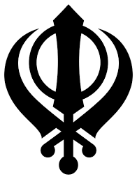

India is country that occupies the greater part of South Asia. It is made up of 28 states and eight union territories, and its national capital is New Delhi, built in the 20th century just south of the historic hub of Old Delhi to serve as India’s administrative center. Its government is a constitutional republic that represents a highly diverse population consisting of thousands of ethnic groups and hundreds of languages. India became the world’s most populous country in 2023, according to estimates by the United Nations.
Its known from archaeological evidence that a highly sophisticated urbanized culture the Indus civilization dominated the northwestern part of the subcontinent from about 2600 to 2000 BCE. From that period on, India functioned as a virtually self-contained political and cultural arena, which gave rise to a distinctive tradition that was associated primarily with Hinduism, the roots of which possibly can be traced to the Indus civilization. Other religions, notably Buddhism and Jainism, originated in India though their presence there is now quite small and throughout the centuries residents of the subcontinent developed a rich intellectual life in such fields as mathematics, astronomy, architecture, literature, music, and the fine arts.
My Religion
Sikhism, also known as Sikhi , The Translation being, 'disciple / learner'),it is a Indian religion and philosophy in particular for the Sikh ethnoreligious group that originated in the Punjab region of India around the end of the 15th century CE. The Sikh scriptures are written in the Gurumukhi script particular to Sikhs. It is one of the most recently founded major religious groups and among the largest in the world, with about 25–30 million adherents (known as Sikhs).
Sikhism was developed from the spiritual teachings of Guru Nanak (1469–1539), the faith's first guru, and the nine Sikh gurus who succeeded him. The tenth guru, Gobind Singh (1666–1708), named the Sikh scripture Guru Granth Sahib Ji as his successor, bringing to a close the line of human gurus and establishing the scripture as the 11th and last eternally living guru, a religious spiritual/life guide for Sikhs. Guru Nanak taught that living an "active, creative, and practical life" of "truthfulness, fidelity, self-control and purity" is above metaphysical truth, and that the ideal man "establishes union with God, knows His Will, and carries out that Will". Guru Hargobind, the sixth Sikh Guru (1606–1644), established the concept of mutual co-existence of the miri ('political'/'temporal') and piri ('spiritual') realms.
The Sikh scripture opens with the Mul Mantar or alternatively spelled "Mool Mantar" , Thea fundamental prayer about Ik Onkar ('One Creator'). The core beliefs of Sikhism, articulated in the Guru Granth Sahib Ji, which include faith and meditation in the name of the one creator; divine unity and equality of all humankind; engaging in seva ('selfless service'); striving for justice for the benefit and prosperity of all; and honest conduct and livelihood. Following this standard, Sikhism rejects claims that any particular religious tradition has a monopoly on Absolute truth. Sikhism emphasizes simran (meditation and remembrance of the teachings of Gurus), which can be expressed musically through kirtan, or internally through naam japna ('meditation on His name') as a means to feel God's presence. It teaches followers to transform the "Five Thieves" (i.e., lust, rage, greed, attachment, and ego).
The Definition of Sikh is any human being who faithfully believes in: One Immortal Being, Ten Gurus, from Guru Nanak Sahib to Guru Gobind Singh Sahib,The Guru Granth Sahib ji, The utterances and teachings of the ten Gurus and, The baptism bequeathed by the tenth Guru, and who does not owe allegiance to any other religion, is a Sikh.

The national flag of India, colloquially called Tiraṅgā (the tricolour), is a horizontal rectangular tricolour flag, the colours being of India saffron, white and India green; with the Ashoka Chakra, a 24-spoke wheel, in navy blue at its centre.

This is a map of where india is located in the world.
The Khanda is the symbol of the Sikhs, as the Cross is to Christians or the Star of David is to Jews. It reflects some of the fundamental concepts of Sikhism. The symbol derives from “charity, sword, and victory.” It means that charity, the brotherhood of man, and the sword of righteousness should always prevail.

This is the place Sikhs worship called the Darbar Sahib or Sri Harmandir sahib, it is also called the golden temple in english since it's made of gold. Located in Amritsar, Punjab.

This is a map of where Punjab is located in India from this we can see that it's north-west of india.
 email:ekamnoorkaur.man@mybdscschool.nz
email:ekamnoorkaur.man@mybdscschool.nz